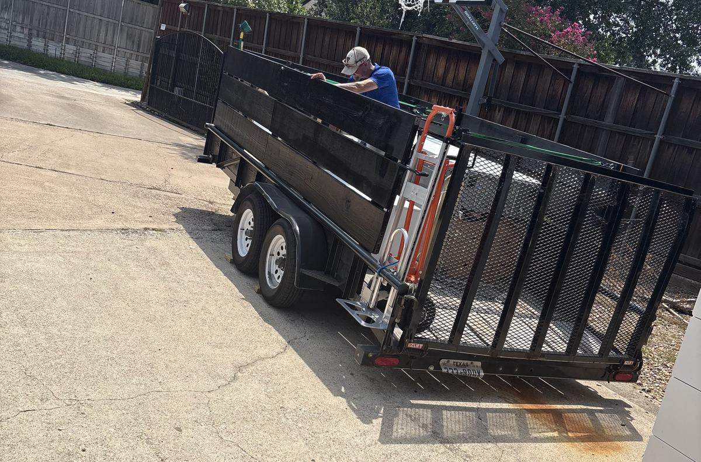

Who shows up
Hero’s is a veteran owned, family run junk removal team based in Frisco. When you text a photo, Todd reads it. When the truck pulls up, it is him and his son Nash, not a rotating crew from a call center three states away.
The short version
Todd started Hero’s after his time in the military, helping neighbors clear garages and estates around Frisco with a truck and a trailer. His son Nash grew up on the job and now works it alongside him. That is still the entire crew.
Because there is no dispatcher, no subcontractor, and no call center between you and the truck, the price you hear before the job stays the price you pay when it is done.


Why the photo comes first
Most companies in this category will not give a price until they are standing in your driveway, and plenty of homeowners find the number climbs once the truck shows up. Hero’s asks for a photo first so you get a firm price before anyone drives out, not after.
That habit came from Todd’s own rule for the business: treat every house the way you would want your own family treated, and never let the price move once someone has said yes.
Where we work
Hero’s is based in Frisco and covers those six North Dallas cities. Rated 4.9 on Google, and every review names Todd or Nash by first name, because they are the two people who actually show up.
Questions people ask first
It takes about ten seconds and you will have a price back shortly. Open 7am to 8pm, every day.